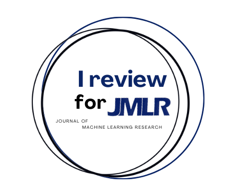

2019-... - Research Scientist - RIKEN AIP
2014-2019 - Professeur de Statistique - ENSAE Paris
2012-2014 - Lecturer in Statistics - UCD Dublin
2007-2012 - Maître de Conférences (lecturer) en Statistique - Université Paris Diderot (now: Université de Paris )
2006-2007 - ATER (temporary teaching position) en Statistique - Université Paris Dauphine
2013 - Habilitation à diriger les recherches (habilitation to supervise PhD) - Université Pierre et Marie Curie (now: Sorbonne Université )
2006 - Doctorat (PhD) - Université Pierre et Marie Curie (now: Sorbonne Université )
2003 - DEA de Probabilités et Applications (MSc in Probability Theory) - Université Pierre et Marie Curie (now: Sorbonne Université )
2003 - Diplôme de Statisticien-Economiste (MSc in Economics and Statistics) - ENSAE Paris
2022 - PC chair for ITISE 2022
2022 - PC chair for COLT 2022
2022 - Area chair for AISTATS 2022
2020-... - action editor of the Journal of Machine Learning Research
2020-... - member of the Topical Advisory Panel of Entropy
2021 - co-organizer (w. S. Loustau & P. Gay) of the workshop "Power-efficient Deep Learning" at ACML 2021
2021 - Area chair for NeurIPS 2021
2021 - PC chair for ITISE 2021
2021 - scientific committee of End-to-end Bayesian learning at CIRM
2020-2021 - guest editor for the Entropy special issue on Approximate Bayesian Inference.
2020 - PC chair of ALT 2020
2019 - co-organizer of 4ème journée statistique/apprentissage Paris Saclay
2018 - scientific committee of the 50èmes journées de statistique (JDS) (SFDS)
2018 - co-organizer of 3ème journée statistique/apprentissage Paris Saclay
2017-2019 - co-director of the collection "Economie et Statistique Avancée" by Economica, publishing mostly courses taught at ENSAE Paris
2016 - Publication chair of AISTATS 2016
2009 - local organization of Stats in the Chateau (a summer school in statistics and econometrics)

I served as a reviewer for MathSciNet and for the following peer-reviewed conferences and journals: COLT, NeurIPS, ICML, AISTATS, ALT, ACML, AABI, AAAI, IEEE-ICDM, COMPSTAT, ITISE, GRETSI, JDS, Annals of Statistics, Bernoulli, Journal of the Royal Statistical Society B, IEEE Transactions on Information Theory, Journal of Machine Learning Research, Stochastic Processes and Their Applications, Journal of the American Statistical Association, Electronic Journal of Statistics, Scandinavian Journal of Statistics, Statistics and Computing, Machine Learning, Computational Statistics and Data Analysis, Journal of Multivariate Analysis, Statistics, Statistics and Probability Letters, ESAIM Probability and Statistics, International Statistical Review, Information and Inference, Electronic Communications in Probability, Constructive Approximation, Applied and Computational Harmonic Analysis, Entropy, New Journal of Physics, Physical Review A
-
University of Tokyo - "Special Topics in Mechano-Informatics II": Two lectures on variational inference & online optimization
University of Tokyo - "Special Topics in Mechano-Informatics II": Two lectures on variational inference & online optimization
University of Bristol - Heilbronn Institute - Lectures on variational inference as the Heilbronn Visitor in Data Science
ENSAE - 2A - Cours d'introduction aux processus stochastiques
ENSAE - 2A - Cours d'introduction au machine learning
ENSAE / Paris Saclay - 3A Data Science, M2 "Data Science" & M2 "StatML" - Cours "Online Learning & Aggregation"
ENSAE / Paris Saclay - M2 "StatML" - Responsable du master (avec C. Giraud)
ENSAE - 2A - Cours d'introduction aux processus stochastiques
ENSAE - 2A - Cours d'introduction au machine learning
ENSAE / Paris Saclay - 3A Data Science, M2 "Data Science" & M2 "StatML" - Cours "Online Learning & Aggregation"
ENSAE / Paris Saclay - M2 "StatML" - Responsable du master (avec C. Giraud)
ENSAE - 1A ECO - Cours/TD de calcul différentiel et intégral
ENSAE - 2A - Cours d'introduction aux processus stochastiques
ENSAE - 2A - Organisation du "séminaire de modélisation statistique"
ENSAE / Paris Saclay - 3A Data Science & M2 "Data Science" - Cours "Online Learning & Aggregation"
ENSAE - 1A ECO - Cours/TD de calcul différentiel et intégral
ENSAE - 2A - Cours d'introduction aux processus stochastiques
ENSAE - 2A - Organisation du "séminaire de modélisation statistique"
ENSAE / Paris Saclay - 3A Data Science & M2 "Data Science" - Cours "Apprentissage Statistique par Agrégation"
ENSAE - 1A ECO - Cours de calcul différentiel et intégral
ENSAE - 1A double cursus HEC - Cours/TD de calcul différentiel et intégral
ENSAE - 2A MATHS - Cours et TD d'introduction aux processus stochastiques
ENSAE - 2A MATHS - Organisation du "séminaire de modélisation statistique"
ENSAE / Paris Saclay - M2 "MATHBIGDATA" - Cours "Advanced Machine Learning" (avec M. Pontil)
Université Paris Dauphine - Certificat Data Science - Analytics and Data Mining (Part 2: Supervised Learning)
UCD Dublin - STAT20100 Inferential Statistics
UCD Dublin - STAT30250 Linear Models II
UCD Dublin - STAT30010-STAT40680 Time Series Analysis
UCD Dublin - STAT30090-STAT40700 Stochastic Models
UCD Dublin - Director of the MSc, MA and HDip in Statistics
UCD Dublin - STAT30250 Linear Models II
UCD Dublin - STAT30010-STAT40680 Time Series Analysis
UCD Dublin - STAT30090-STAT40700 Stochastic Models
UCD Dublin - STAT40510-STAT40530 Applied Statistical Modelling
Université Paris 7 - L3 MASS - Cours d'économétrie
Université Paris 7 - M1 MATHS - Cours de statistique bayésienne
Université Paris 7 - L3 MASS - Cours d'économétrie
Université Paris 7 - M1 MATHS - Cours de statistique bayésienne
Université Paris 7 - L3 MASS - Cours et TD d'économétrie
Université Paris 7 - M1 MATHS - TD de statistique fondamentale (cours: D. Picard)
Université Paris 7 - M1 MATHS - TD de statistique bayésienne (cours: D. Picard)
Université Paris 7 - M2 Modélisation - TD de méthodes basiques en statistiques (cours: D. Picard)
ENSAE - 1A ECO - TD de calcul différentiel et intégral (cours: M. Grun-Rehomme)
Ecole Nationale des Ponts et Chaussées - 2A - Cours d'apprentissage statistique (avec J.-Y. Audibert et G. Lécué)
Université Paris 7 - M1 MATHS - TD de statistique fondamentale (cours: D. Picard)
Université Paris 7 - M1 MATHS - TD de méthodes markoviennes en statistique (cours: S. Delattre)
Université Paris 7 - M1 MATHS - Projets informatiques et algorithmiques (avec J. Salmon et M. Hebiri)
Université Paris 7 - M1 MATHS - TD de statistique fondamentale (cours: D. Picard)
Université Paris 7 - M1 MATHS - TD de méthodes markoviennes en statistique (cours: S. Delattre)
Université Paris 7 - M1 MATHS - Projets informatiques et algorithmiques (avec E. Le Pennec et O. Bokanovski)
Université Paris Dauphine - L3 MST-EESE - Cours et TD d'économétrie
Université Paris Dauphine - L3 MASS - TP de NOISE: Nouveaux Outils en Statistique Exploratoire (cours: C. Robert)
Université Paris Dauphine - M1 MATHS - TP de SAS et modèles linéaires (cours: J. Rousseau)
Université Paris Dauphine - M1 IAGE - TD de Modélisation et Analyse des Systèmes (cours: C. Pardoux)
Université Paris Dauphine - L3 MST-EESE - Cours et TD d'économétrie
Université Paris Dauphine - L3 MASS - TP de NOISE: Nouveaux Outils en Statistique Exploratoire (cours: C. Robert)
Université Paris Dauphine - M1 MIAGE - TD de Modélisation et Analyse des Systèmes (cours: C. Pardoux)
Université Paris Dauphine - L3 MASS - TP de NOISE: Nouveaux Outils en Statistique Exploratoire (cours: C. Robert)
Université Paris Dauphine - M1 MIAGE - TD de Modélisation et Analyse des Systèmes (cours: C. Pardoux)
ENSAE - 1A ECO - TD de calcul intégral (cours: M. Grun-Rehomme)
ENSAE - 2A - TD de théorie des tests (cours: J. Diebolt)
Université Paris Dauphine - L1 GEA - Cours et TD de statistique descriptive (responsable: C. Pardoux)
ENSAE - 2A - TD d'économétrie (cours: D. Fougère)
ENSAE - 2A - TD d'estimation et introduction à la théorie des tests (cours: P. Doukhan)
Lycée Sainte-Marie-de-Neuilly - Khagne BL - Colles de mathématiques
{kind=link}
{kind=link}
{kind=link}